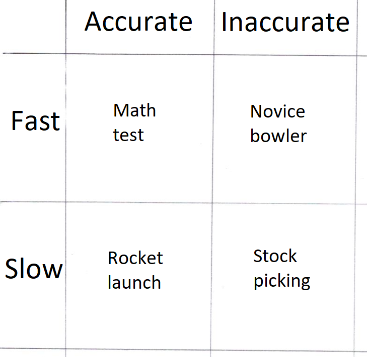
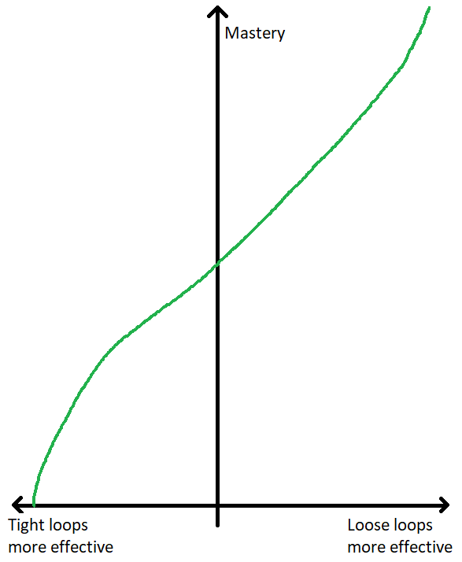
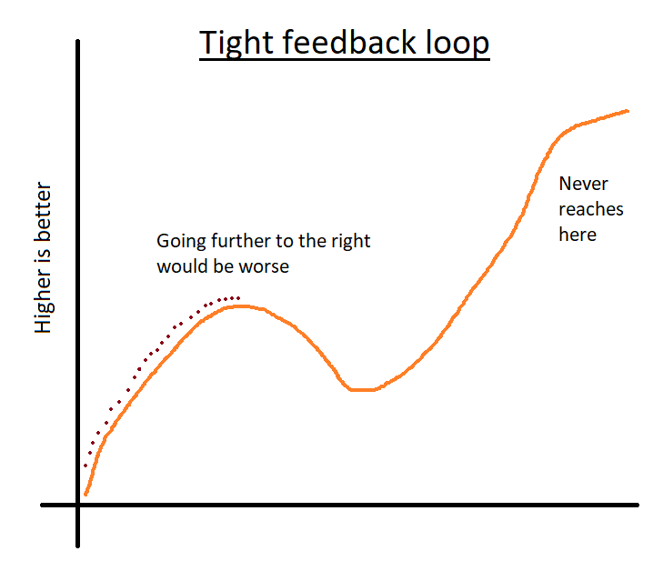
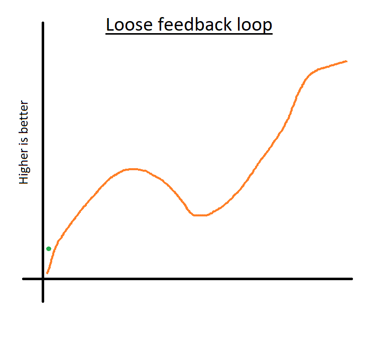
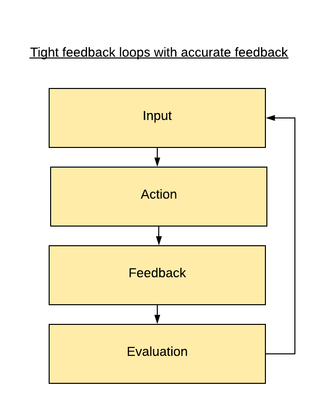
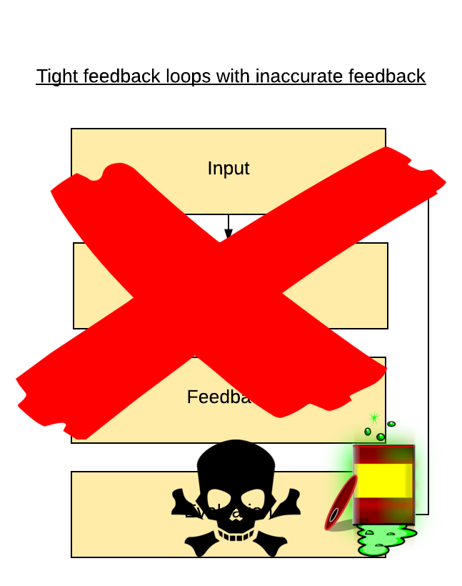
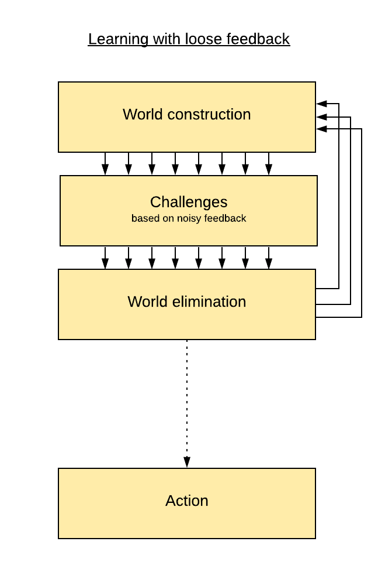

The problem with fast, accurate data
A martial arts student went to his teacher and said earnestly, "I am devoted to studying your martial system. How long will it take me to master it?" The teacher's reply was casual, "Ten years." Impatiently, the student answered, "But I want to master it faster than that. I will work very hard. I will practice everyday, ten or more hours a day if I have to. How long will it take then?" The teacher thought for a moment, "20 years."
A feedback loop is a process which loops back on itself and continues indefinitely. For example, Assess-Plan-Implement-Evaluate (ADPIE) is a system used in healthcare to treat patients. The patient is assessed and diagnosed, a doctor comes up with a treatment plan, nurses implement the plan, and the patient is then evaluated. The results of the evaluation are fed back into the Assess part of the loop, and the cycle begins anew.
Feedback loops vary in their accuracy. Accurate feedback means that it reliably tells you when you do something right. An example of an accurate feedback loop would be a high school math test. If Bob gets the quadratic formula wrong, the teacher can see it and remind him of the right formula. Bob now knows what to do next time.
An inaccurate feedback loop would be something like a novice bowler without a coach. The bowler will sometimes throw the ball into the gutter and sometimes get a strike, but his results are mostly the result of luck. Getting a strike or a gutter doesn't say much about whether the bowler's form is improving. An inaccurate feedback loop means that the results of the evaluation phase are "noisy" and contain significant variance, so the next assessment cycle will need to take that into account.[1]
Loops can also be fast or slow. If a decision takes years to play out, it'll be much tougher to draw meaningful conclusions within a short period of time. The math test is fast, because you get feedback a few minutes after you finish the test. So is the novice bowler, who receives his score seconds after throwing the ball. A slow loop is something like building a space rocket. This is a complex undertaking that needs years to bear fruit, and you only know whether your rocket works on launch day. Deciding to invade Iraq is another example.
This gives us a 2 by 2 of feedback loops:
Tight feedback loops
A tight feedback loop means that feedback about the results of your choices are both accurate and fast - in the above matrix, it's the math test.
The shorter and more accurate the feedback loop, the easier it is to learn. A key goal of process improvements is to shorten the loop and provide more feedback to the user at regular intervals. Business advice constantly bangs this drum. Look at all this praise for tight loops:
"It's funny how many things in business are improved by the meta-advice "tighten your feedback loops." (Patrick McKenzie)
"The better your feedback loop, the better your work." (Naval Ravikant)
"How can we accelerate personal feedback loops? Many problems in life can be fixed with a tight feedback loop." (David Perell)
Tight feedback loops are good in gentle environments. An example of a gentle environment is software development. Outcomes are clearly specified, frameworks are common and work well, and your actions receive instant and accurate feedback.
But the real question is whether we should try to tighten the feedback loops in our lives, or try to improve our ability to learn from looser feedback loops. This depends on how easy it is to improve feedback loops, and how easy it is to learn from noisier data.
Quantify at your own risk
Productivity and self-improvement gurus focus on improving feedback loops. This often involves quantifying everything. We absorb this way of thinking starting in high school. High school science rubrics put qualitative analysis on a lower level of achievement, while quantitative analysis is at a higher level of achievement.
Unfortunately, real life situations where quantification is useful tend to be trivial or routine, and thus vulnerable to automation. That's because the benefit of numbers is that they improve accuracy. Accuracy is more useful in entry-level jobs and for novices, because as skill increases, quantification of skill becomes harder. Skills that are easy to quantify are easy to systematize and learn.
When quantifying things, people naturally focus on things that can easily be measured. Measuring the final result doesn't provide enough quantitative data, so it's tempting to include the data from intermediate steps. This is an attempt to shorten the feedback loop, and trying to shorten feedback loops is very dangerous in complex systems.
Changing a process so that feedback arrives more quickly is alluring, because it provides an immediate boost to results. People are buoyed by this "improvement", and sing the praises of their new system. Sadly, they'll find that a few months later, things are worse than when they started.
This is because feedback loops which are too short for the overall system makes people focus on inappropriate intermediate goals. It's the main cause of catastrophic long term strategic mistakes.
In the business world, for example, it led to the comprehensive failure of the Boeing 737 Max, and the loss of a reputation for quality built over decades.
Why doesn't fast, accurate feedback lead to better learning?
Tight feedback loops are seductive because they give us the feeling of rapid improvement. This can be as addictive as any drug. And it's true that in the early stages of learning a craft, tight feedback loops do help us improve quickly. When we're getting the hang of things, we make major mistakes, so feedback helps us correct course.
But after achieving proficiency in a field, tight feedback loops are useless. That's because initially, the learning environment is gentle. The path is well-travelled, there are easily accessible guides, things work according to common sense. As we become proficient, the environment becomes harsher, with noisier feedback. Improving is not as easy. At higher levels of skill, further progression depends on self-learning, on discovering or inventing new practices and knowledge. As skill increases, the gap between optimizing for metrics and optimizing for mastery widens.
This is also why people tend to flit around from field to field. As soon as they exhaust the easy gains, they look for a learner's high elsewhere. This feeds their addiction, but doesn't lead to learning any useful skills.
Focusing on tight feedback also leads to getting stuck in local maxima. The short turnaround time leads to the pursuit of incremental improvements. Accurate feedback reduces error, but this means reaching and staying at the local maximum. The more accurate and more rapid the loop, the more quickly you'll arrive at the top of the hill - and the less chance you have of leaving it to climb the mountains of mastery.[2]
But this doesn't happen when the feedback is more sporadic:
Beating the stock market
Trying to make loops more accurate is often meaningless, and trying to make loops shorter is dangerous. The alternative: how easy is it to learn from noisy data?
It's much easier than trying to tighten feedback loops.
I was previously an equity research analyst at a value investment fund. I researched publicly traded companies, looking for ones with underappreciated prospects. The only way to measure results is stock price movement. This is extraordinarily noisy, because stock prices can fluctuate for hundreds of reasons unrelated to company value. The feedback cycle is measured in years, because that's how long it takes for an investment thesis to play out. Research shows that even a 10 year period of outperformance is likely due to luck, not skill, because the impact of random noise far outweighs investment acumen.
It's a difficult game to play, with 90% of funds underperforming the benchmark.[3] I was fortunate to have produced market-beating performance over two decades. People smarter and harder-working than me consistently underperform the market, defeated by the randomness of their profit and loss. They feel invincible when they have a good year and crushed when they have a bad year. Stock picking is a harsh environment!
I learned how to improve my investment process by working with a loose feedback loop, but they insisted on trying to tighten the feedback loop.
How to learn in noisy environments
Here's the standard feedback loop:
But when data is noisy, this feedback loop is worthless. We cannot use this output as an input into our loop, it'll lead to wrong results!
Instead, we use this loop, which works well in harsh environments with noisy feedback:
Learning under conditions of noisy data starts with world construction. Imagine a possible future, and repeat this to generate hundreds of possible future worlds. The main skills and resources required are creativity, slack, and equanimity. Creativity leads to a higher rate of idea generation and slack gives us more time to generate ideas. Equanimity is important because it allows us to persevere in the absence of tangible feedback.
Next, we eliminate some incorrect worlds by testing them against noisy data. This data should come from intermediate steps and can't be quantified. If the data conflicts with an imagined future, that future is unlikely to occur. Noisy information may be bad for feedback loops, but it's great for elimination, because the wider range of outcomes is more effective for pruning. It may even be a bit faster than accurate data, since the variance of accurate data is lower!
As we near decision time, we stop the world construction and elimination, and use judgment and experience to pick the best idea out of the remaining ones. Process improvement happens by creating many parallel processes and discarding the ones that are unfit, not by iteratively improving a single process.
Analyzing a stock
I once considered investing into a Japanese pachinko company. Pachinko is a type of quasi-legal gambling using pinball machines. I thought of some possible futures. What if young people all play mobile gaming, so only the elderly go to pachinko parlors? What if legalized casinos compete with pachinko? What if they can export this gaming to other countries? What if gangsters interfere in this lucrative gambling business? What if people have less income, will they give up pachinko as discretionary spending? What if land values rise? What if urbanization depopulates their customer base? What if the Japanese government introduces more regulation? What if trade problems make it harder to get the components for the machines? What if improvements in software development make it cheaper to update the games? What if pachinko moves online? What if taxation increases because the government needs money? What if cultural trends affect the propensity of people to visit pachinko parlors? What if pachinko becomes a tourist attraction? What if the parlors merge into larger units, or fragment into smaller ones? What if large pachinko chains have economies of scale? What if ancillary services become more attractive? What if family-friendly pachinko machines attract a new type of customer?
Then, I went through and answered these questions. Many of them were easy to answer by searching online or talking with people. For example, legalized casinos would open more than a decade later, too distant to affect valuations, so I ignored it.
I had only one choice to make - whether to invest in the company or not - and concluded that buying it would be profitable. Investment is a binary decision, but this process also works well for situations with many possible paths forward.
After investing in the company, I did not use subsequent stock price performance to inform my decision making. I stuck with the process and treated the stock price as just one piece of information I could use to validate future hypotheses.[4]
Improvement
We improve at this process by becoming more creative, having more slack, being more equanimous, and pruning more efficiently.
Creativity is a function of being well-read and having exposed to a variety of stimuli. Reading different sorts of books, blogs, novels, and primers will help. Exploring new places and talking with different people also fills us with more concepts and ideas to draw from.
We gain slack by being emotionally, physically, socially, and financially secure. This is a long-term project. Slack may be the most difficult factor to improve, because it is a reflection of our life circumstances. That said, discarding low priority tasks and chores can free up time and mental energy.
Equanimity can be improved by brain rewiring. Otherwise, it seems to be an immutable personality trait.
Pruning - the rapid discarding of invalid hypotheses - can be improved by being more discerning. Discernment requires much reading, focused on history and biographies, and effortful conversation with intelligent people. This shows us how other people wrestle with difficult topics. History gives us more ways to judge the validity of a hypothesis. Reading biographies and talking with intelligent, informed people lead to new ways of thinking.
Life-altering decisions are noisy
Reversible actions can be stopped if they turn out to be bad, and tend to work well with tight feedback loops. Irreversible decisions tend to have a long lag time from decision to feedback, and are often more consequential. They must be dealt with using the noisy feedback toolset.
The most important decisions in life are irreversible. What career path should I embark upon? Should I emigrate to another country? Who should I marry? What should my core values be? What is good in life? What people should be my lifelong friends?
Because these decisions are so important, improving our ability to learn in noisy feedback environments has more impact on our life than tightening feedback loops.
Personality
Some people naturally prefer feedback loop optimization, while others want to learn better in noise.
In my experience, people who like tight feedback loops tend to
- Be highly organized
- Be "Type A"
- Have high stamina/energy
- Have forceful personalities
- Like impractical rationality (e.g. the Sequences, utilitarianism)
People who are good at learning in noise tend to
- Be highly creative
- Be "Type B"
- Be high in 'openness to experience'
- Like applied rationality (e.g. meditation, 3D thinking)
Fortunately, it's possible to be good at both of these skills. The biggest roadblock is that most people think it's impossible to use noisy feedback!
Be water
"You must be shapeless, formless, like water. When you pour water in a cup, it becomes the cup. When you pour water in a bottle, it becomes the bottle. When you pour water in a teapot, it becomes the teapot. Water can drip and it can crash. Become like water my friend." - Bruce Lee
People who can learn in noisy, harsh environments can also learn well in gentle environments. The reverse is not true. Techniques used to optimize efficiency in gentle environments are fragile. Learning to deal with loose feedback loops makes us resilient.
Do you want to be great at quickly reaching a mediocre level, and being efficient? Or is it better to achieve mastery and be good at making big decisions?
1 ↩ In technical language, inaccurate feedback has too many confounders to be able to easily establish a cause-effect relationship between the action and the feedback.
2 ↩ One way of dealing with this is the explore/exploit algorithm, which sets a schedule for attempting to leave the local maximum. This bypasses the tight feedback loop temporarily. But without the ability to effectively learn in noisy situations, it's likely to settle again on the local maximum.
3 ↩ Fund performance is compared against a benchmark. A benchmark is the result obtained by buying every stock that the fund's strategy allows. This is a "no-brainer" strategy known as indexing, and is easy to execute. If a fund can't beat its benchmark, the investor should avoid it and buy the benchmark instead.
4 ↩ Don't copy this process for your own investing! It doesn't work in all markets and it doesn't work with all stocks.